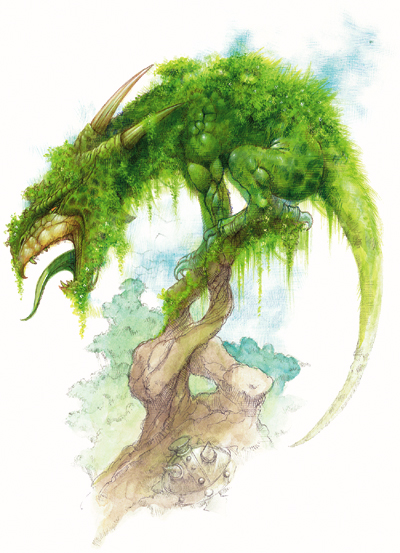
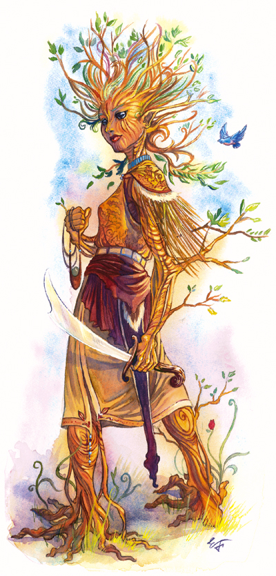

树化生物是和大自然的结合体；在很大程度上，它们变成了植物生物。这些生物都有着和普通生物不同的心智，更近似于树人。它们是一种能和大自然和谐共处的生命。
树化是一个可以添加倒任何有肉体的动物，龙，精类生物，巨人，类人生物，魔法兽，以及人形怪物上的模板（以下将它简称为“基本生物”）。
树化生物将沿用基本生物的所有资料以及能力，除了以下几点：
体型和类型：树化生物的类型不会改变，但它也同时会拥有植物的特质（见下文）。
防御等级：基本生物的天生防御提升+7
攻击：树化生物保留基本生物的所有攻击方式，同时若基本生物没有挥击，则其获得挥击的能力。若基本生物能使用武器，该树化生物依然保留此能力。具有天生武器的生物依然保留其天生武器。没有武器的树化生物可以使用其挥击或原本的天生武器（若它有的话）攻击。持有武器的树化生物则可以自由选择使用武器或挥击来攻击。
全回合攻击：没有武器的树化生物使用其挥击（见上）或其天生武器（若它有的话）来攻击。若它持有武器，则往往会以武器为主要武器来攻击，并将挥击或其他天生武器作为天生的次要武器来攻击。
伤害：树化生物拥有挥击的能力。若基本生物没有这种攻击模式，则根据其体型使用下面的伤害表。拥有该天生武器的生物保留其原有伤害或参考下表资料，取其数值较高者。
| 体型 | 伤害 |
|---|---|
| 超微型 | 1 |
| 微型 | 1d2 |
| 超小型 | 1d3 |
| 小型 | 1d4 |
| 中型 | 1d6 |
| 大型 | 1d8 |
| 超大型 | 2d6 |
| 巨型 | 2d8 |
| 超巨型 | 4d6 |
类法术能力：感知到达8或更高的树化生物根据其HD不同会拥有以下类法术能力，这些能力可以累加。例如，一个树化奇美拉（9HD）可以使用纠缠术每天一次，二级召唤盟友术每天一次，与植物交谈每天一次，以及四级召唤盟友术每天一次。施法者等级等同于生物HD，其豁免DC基于魅力。
| HD | 能力 |
|---|---|
| 1-2 | 纠缠术 每天一次 |
| 3-5 | 二级召唤盟友术 每天一次 |
| 6-7 | 与植物交谈 每天三次 |
| 8-10 | ? 四级召唤盟友术 每天一次 |
| 11-12 | 命令植物 每天一次 |
| 13-15 | 六级召唤盟友术 每天一次 |
| 16-18 | 活化植物 每天一次 |
| 19-20 | 八级召唤盟友术 每天一次 |
| 21+ | ? 操控植物 每天一次 以及九级召唤盟友术每天一次 |
特性：树化生物拥有基本生物的所有特性，同时也获得下列特性：
伤害减免（EX）：树化生物获得5/挥砍的伤害减免。
昏暗视觉（EX）：生物获得昏暗视觉，在星光，月光，火把或类似的弱光情况下，其视觉距离是人类的两倍。同时，在这种状况下，他们依然能分辨色彩和物体的细节。
植物特质：树化生物对毒素、魔法睡眠效果、麻痹、变形、震慑和影响心灵（魅惑[charm]、胁迫[compulsion]、魅影幻觉[phantasm]、心灵幻觉[pattern]、以及士气效果[morale effect]）的法术和能力免疫，且不受到重击的效果。
技能奖励（EX）：树化生物的皮肤和毛发与树皮和树叶类似。这些生物的翅膀一般也和树叶或其他植物体的形态相似，且生物的每个部分都具有会随着季节变化而更替的植物般的外表。早春时为亮绿色，夏季时颜色开始转深。秋季则会开始发黄，变成橙色，最终转成类似落叶的红色，并且到了冬天变成淡棕色。树化生物在地表的自然环境中躲藏和潜行技能有+4的加值。
畏火（EX）：树化生物拥有畏火的特性。火焰会对一个树化生物造成比一般多一半（50%）的伤害，无论是否有豁免和是否通过了豁免。
环境：任何自然地表
挑战等级：基本生物+2
组织：与基本生物相同，但大多数基本生物的族群通常只有一个树化生物。
等级调整：+3
此范例使用一个蜥蜴首领为基本生物
中型动物

| 生命骰： | 3d8+9（22hp） |
| 先攻： | +2 |
| 速度： | 30英尺（6格），游泳30英尺 |
| 防御等级： | 22（+2敏捷，+10天生），接触12，措手不及20 |
| 基本攻击/擒抱： | +2/+5 |
| 攻击： | 啮咬+5近战（1d8+4），或挥击+5近战（1d6+4） |
| 全力攻击： | 啮咬+5近战（1d8+4），或挥击+5近战（1d6+4） |
| 面宽/触及： | 5英尺/5英尺 |
| 特殊攻击： | 类法术能力 |
| 特殊能力： | 伤害减免5/挥砍，昏暗视觉，植物特质，畏火 |
| 豁免： | 强韧+6，反射+2，意志+1 |
| 属性： | 力量17，敏捷15，体质17，智力1，感知12，魅力2 |
| 技能： | 攀爬+7，躲藏+6*，聆听+4，潜行+6*，侦察+4，游泳+11 |
| 专长： | 警觉，战斗反射，强韧加强，追踪 |
| 地域： | 温暖森林 |
| 组织： | 单独 |
| 挑战等级： | 4 |
| 宝物： | 无 |
| 阵营： | 总是中立 |
| 进化： | 4-5HD（中型） |
| 等级调整： | - |
这种4英尺左右长的蜥蜴拥有树皮状的皮肤，而身上的鳞片颜色和外观也都有着树叶的特征。
树化蜥蜴首领偶尔可以在树人居住的地方被发现。
树化蜥蜴首领相当好斗，它们使用其强有力的下颚撕咬猎物或敌人。同时，它们也会攻击任何威胁到它们领地的家伙。
类法术能力：每天一次――纠缠术（DC7），二级召唤盟友术
技能：树化蜥蜴首领在表演特殊动作和逃避危险的游泳检定上获得+8的种族加值，它也可以在游泳检定上取10，即使在分心或是受威胁的状态下也一样。如果游泳路线是一条直线，那么它可以在游泳时使用奔跑动作。
?? 树化蜥蜴在躲藏和潜行检定中获得+4的种族加值。*在地表的自然区域中，躲藏加值提升至+12，同时潜行加值提升至+8。
此范例使用一个9级人类德鲁伊为基本生物。
中型类人生物（人类）

| 生命骰： | 9d8+9（49hp） |
| 先攻： | +3 |
| 速度： | 30英尺（6格） |
| 防御等级： | 28（+3敏捷，+4 +2皮甲，+4 +2大木盾，+7天生），接触13，措手不及25 |
| 基本攻击/擒抱： | +6/+7 |
| 攻击： | +1弯刀+9近战（1d6+2/18-20），或挥击+7近战（1d6+1） |
| 全力攻击： | +1弯刀+9/+4近战（1d6+2/18-20）和挥击+7近战（1d6+1） |
| 面宽/触及： | 5英尺/5英尺 |
| 特殊攻击： | 类法术能力，法术 |
| 特殊能力： | 动物伙伴，伤害减免5/挥砍，昏暗视觉，自然智识，植物特质，抗自然诱惑，无踪步，生物毒免疫，畏火，野性认同，野性变身3次/日，穿林 |
| 豁免： | 强韧+7，反射+8，意志+12 |
| 属性： | 力量12，敏捷16，体质13，智力10，感知19，魅力8 |
| 技能： | 驯养动物+11（对动物伙伴+15），躲藏+2*，知识（自然）+13，聆听+15，潜行+2*，骑术+5，侦察+15，生存+15（在地表自然环境+17） |
| 专长： | 警觉，钢铁意志，闪电反射，追踪，专攻武器（弯刀） |
| 地域： | 温暖森林 |
| 组织： | 单独 |
| 挑战等级： | 11 |
| 宝物： | 标准 |
| 阵营： | 中立善良 |
| 进化： | 根据职业等级 |
| 等级调整： | - |
你看见的是一位人类女子和一棵植物的混合体。她的皮肤如同树皮，无数的叶子从她的头发中长出并舒展开来。她的双手分别持着一把弯刀和一个投石索，身上的衣物由简单的叶子缝制而成。
树化人类偶尔会出现在偏僻的树林中。他们一般都是德鲁伊或巡林客，但树化生物也可以是其他任何职业。
秋子在对付敌人时总会尽量拉开距离。她会使用许多强大的法术，例如baleful polymorph和冰风暴，以尽快结束战斗。。
类法术能力：每天三次――与植物交谈；每天一次――纠缠术（DC10），二级召唤盟友术，四级召唤盟友术。
动物伙伴：秋子拥有一只名为“灰影”的凶暴狼獾为动物伙伴。秋子和灰影拥有链接，且可以共享法术的特殊效果（见下文）。
链接（EX）： 秋子可以以即时动作来驾驭灰影，也可以以一个移动动作来激励它，而不管她是否有驯养动物技能等级。秋子在做和她的动物伙伴相关的野性认同或驯养动物检定时都有+4环境加值。
自然智识（EX）： 秋子在知识（自然）和生存检定时获得+2加值。
抗自然诱惑（EX）： 秋子在对抗精类生物（fey）的类法术能力时豁免有+4加值。
法术共享（EX）： 若动物伙伴在施法时处在她周围5英尺内，秋子可以让她施放给自己的法术同样影响自己的动物伙伴。她也可以将目标为“你”的法术释放在她的动物伙伴身上。
无踪步（EX）： 秋子在自然环境下不会留下任何痕迹，也无法被追踪。
毒免疫（EX）： 秋子免疫所有毒素。
野性认同（EX）： 秋子可以改善动物的态度。该能力类似在改善人的态度时所做的交涉检定。秋子掷一个1d20+10以决定野性认同的结果（也可以掷1d20+6以尝试感化一个智力为1或2的魔法兽）。
野性变身（EX）： 秋子可以将自身形体变形成小型、中型或大型动物，每天三次，每次至多9小时。
穿林（EX）： 秋子可以以正常速度通过任何矮树丛（例如自然的荆棘丛，石南丛，茂密的灌木丛，以及其他类似地形），并且不会受到伤害或者其他损失。但是用魔法生成的这类地形还是会阻碍她的行动。
已准备的德鲁伊法术（6/5/5/4/3/1）：0级――造水术，治疗微伤，侦测魔法，侦测毒性，光亮术，修复术；1级――魅惑动物（DC15），忍受元素伤害，longstrider，妖火，魔石术；2级――蛮力术，火焰刀，灼热金属（DC16），蛛行术，树皮术；3级――昼明术，高等魔牙，融身入石，荆棘丛生（DC17）；4级――解除魔法，行动自如，冰风暴；5级――baleful polymorph（DC19）
拥有物品：+1弯刀，+2皮甲，+2大木盾，感知护符+2，敏捷手套+2，治疗中度伤害法杖（25发），10pp，18gp。
灰影（Grayshadow），动物伙伴：凶暴狼獾
CR ―；大型动物；生命骰 7d8+31；hp 62；先攻 +4；速度 30ft，攀爬 10ft；AC 19，接触13，措手不及15；基本攻击+5；擒抱+15；面宽/触及 10ft/5ft ；攻击爪抓+10近战（1d8+6）；全回合 2爪抓+10近战（1d8+6）以及啮咬+5近战（1d8+3）；特殊攻击狂暴；特性 反射闪避，链接，嗅觉灵敏，共享法术，两项奖励技巧；阵营 中立；豁免 强韧+9，反射+9，意志+6；力量23，敏捷18，体质19，智力2，感知12，魅力10
技能和专长：攀爬+14，聆听+8，侦察+8；警觉，健壮，精通天生武器（爪击），追踪*
狂暴（Rage，EX）凶暴狼獾如果在战斗中受伤，在下一轮就会进入狂暴状态，疯狂地用爪抓和啮咬公鸡，直到自己或对手死为止。狂暴时凶暴狼獾得到+4力量，+4体质，-2AC。该生物无法自行中止狂暴状态。
反射闪避（Evasion，EX）：有些攻击效果若通过反射检定可以减少一半伤害，如果动物伙伴遭到此类攻击，在通过反射检定后它将不受伤害。
链接（Link，EX）：秋子可以以即时动作来驾驭灰影，也可以以一个移动动作来激励它，而不管她是否有驯养动物技能等级。秋子在做和她的动物伙伴相关的野性认同（wild empathy）或驯养动物检定时都有+4环境加值。
法术共享（Share Spells，EX）：若动物伙伴在施法时处在她周围5英尺内，秋子可以让她施放给自己的法术同样影响自己的动物伙伴。她也可以将目标为“你”的法术释放在她的动物伙伴身上。
技能：凶暴狼獾可以在攀爬技能上获得+8种族加值，它可以在攀爬技能检定上取10，即使在分心或是受威胁的状态下也一样。
树化生物居住于在Khorvaire和Aerenal遍布的森林和丛林地中。Aerenal的精灵将树化猿和狒狒当作宠物般饲养，而Valenar的精灵则将狩猎树化蜥蜴作为一项运动（使用它们的皮来做时尚衣装和盔甲）。Xen'drik的丛林中居住着一个被称为Feryk的树化半身人部落。
Feryk们崇拜着一群被称为Viridian Grove的远古树人，他们曾经热情地接待来访者并和他们交易过，然而由于一场不明原因的瘟疫的爆发，使得Viridian Grove被大面积污染，Feryk开始变得凶恶，并开始使用暴力对付外来者。
民间传说，拖瑞尔的那片为西凡那斯所接触过的土地，不仅肥沃，而且充满了祝福。西凡那斯在那里等待了许久并积蓄了越来越多的魔力，使那里生长出许多庞大的树木和坚韧的植物。这个传说还说道，一个在那片土地上被怀上或诞生的孩子，都有可能得到橡树之父的祝福，并且成为自然的一份子：树化生物。